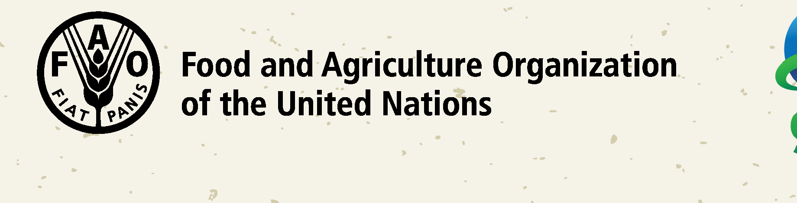

Brand
Brand & logos
DFSA runs on a temporary identity adopted from DSL-IP while its own design language is developed. The wordmark is the primary mark on-screen; the DSL-IP program logo carries provenance; FAO and GEF appear as the anchoring institutions.
DFSA wordmark
Display face, uppercase, forest-deep, with the amber dot. The dot is the one fixed accent.
Use — top-bar brand and page heroes. Never recolour the letters; the dot is always --amber #F8B133.
DSL-IP program logo
logo-full.png — wordmark + split-globe emblem. The primary program logo; used in the page hero lockup.
logo-color.png — wordmark only (no emblem). For tight horizontal spaces.
Institutional lockups

logo-header.png — FAO. The convening organisation.
gef-logo.png — GEF. The financing partner (GEF-7 DSL-IP).
Note. This identity is interim. The authentic DSL-IP display face (DermawanRough, letterpress-condensed) is baked into the logo art; on-screen large display currently substitutes Oswald where the font is not embedded. Full spec: DRIP/DFSA-IDENTITY.md.